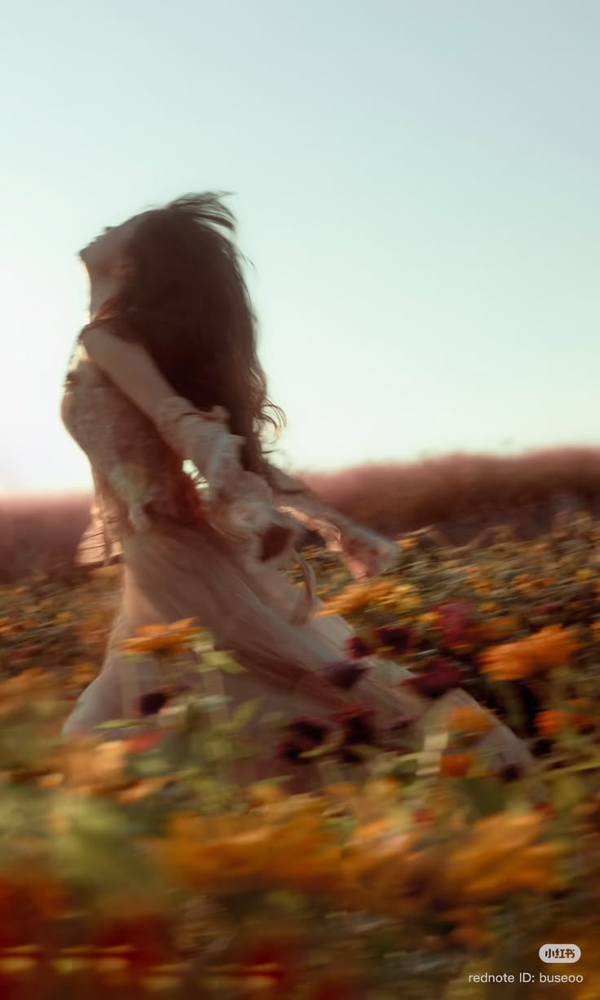
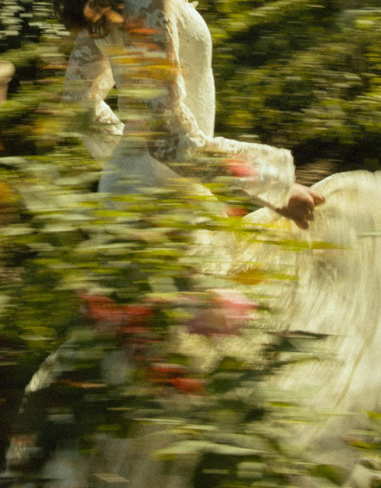

The invisible trace of m
emory. A fragrance that
quietly remains.
The emotions carried by
scent. Soft memories, q
uiet longing,and feeling.
To feel, to sense, to rem
ember. A fragrance not
only worn, experienced.
The brand name SENTI brings together
three meanings in one word.
SENTI is shaped by three quiet meanings
Scent, Sentiment, and Sentir.
Each word reflects how we remember,
feel, and experience fragrance.